TDD Support¶
The CUTE plug-in supports the user in creating and running unit tests for C++. Additionally, it provides decent support for Test Driven Development.
Introduction¶
When following Test Driven Development the unit tests are written before the implementation. While wrting the test cases much semantic and syntactic information about the tested entities is specified. The CUTE plug-in coding assist supports the developer by generating the stubs as a framework for implementing the functionality.
Features¶
- Creating Class Types
- Creating Constructors
- Creating (Member) Variables
- Creating (Member) Functions
- Creating (Member) Operators
- Visibility Manipulation
- Adapting Parameter Lists
- Creating Namespaces
TDD Tutorial¶
Let us have a look at the TDD feature. We will introduce its functionality with a step-by-step example. To develop a simple calculator is our objective.
CUTE Project¶
Create a CUTE Project in CDT.
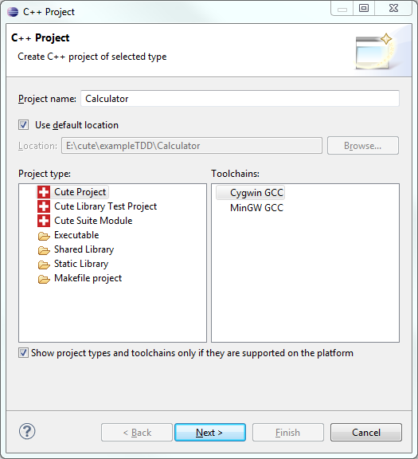
Note: After creating the project there might be several markers indicating problems in Test.cpp. They will vanish as soon as CDT has finished indexing the symbols of that file.
Generating a Type¶
First we want to create a "Calculator" class. We will stick with the mental model of a pocket calculator, always displaying the current value. A member function named "value" shall return it. The initial value in the calculator is 0. This composes our first unit test:
1 void testInitialValue() {
2 Calculator calc;
3 ASSERT_EQUAL(0, calc.value());
4 }
As there is already an example test case after creating a new CUTE project, we can recycle this test by renaming it (Alt+Shift+R when the caret is at the test function name). Then we replace the code in the body with our test code.
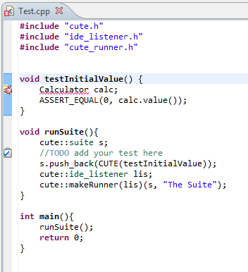
An error marker appears at the line containing Calculator. Hovering the mouse cursor over the marker on the left or the identifier Calculator reveals the problem: Type 'Calculator' cannot be resolved, indicating that at the current position the type Calculator is not known.
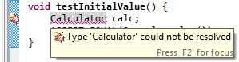
Clicking this marker or by pressing Ctrl+1 a so called resolution appears:
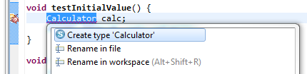
Selecting this resolution creates an empty type definition for Calculator. The kind of type can directly be specified from a list containing struct (which is default), class and enum.

We receive the following code:
1 struct Calculator
2 {
3 };
4
5 void testInitialValue() {
6 Calculator calc;
7 ASSERT_EQUAL(0, calc.value());
8 }
Generating a Member Function¶
Generating this empty type stub removed the marker at Calculator. But another marker appeared at the statement calc.value(); as the type Calculator does not contain a member function value.
Again, by clicking the marker and selecting the resolution Create member function value, a stub for the corresponding function is generated in the type Calculator.
1 struct Calculator
2 {
3 int value() const
4 {
5 return int();
6 }
7 };
Compiling and running the test works now. It even yields a green bar.
Moving the Type¶
We do not want to have the tested code in the same source files as the test code. Thus we move our implementation of Calculator to its own file.
To achieve this you have to select the type definition and invoke the Extract to new header file refactoring (Alt+Shift+P).
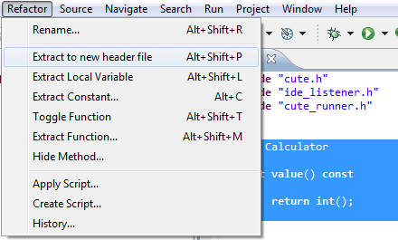
This extracts the type definition Calculator to its own header file.
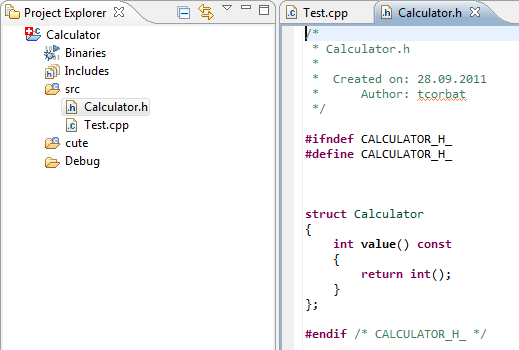
An include directive is added to Test.cpp to retain accessibility of Calculator in the test.
Toggling Function Definition¶
In the new header file we can toggle the definition of value out of the type. Use Toggle Function Definition (Alt+Shift+T) to separate the definition from the declaration of the selected member function.
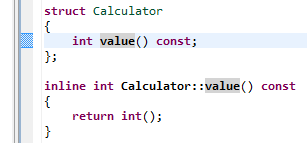
If desired the Toggle Function Definition refactoring can be invoked again, which moves the definition of value to the source file Calculator.cpp. If that file does not exist it is created.
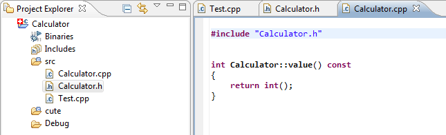
To have a proper separation of test and implementation projects, you need to move the files specifying the Calculator type to their own project. Currently, this is not supported by a refactoring we know. Thus we will skip this and stick with one single project.
Generating a Constructor¶
Now we extend our "Calculator" type to be constructible with a specific value. To do so we create another test case in Test.cpp:
1 void testSpecifiedStartValue(){
2 int startValue = 23;
3 Calculator calc(startValue);
4 ASSERT_EQUAL(startValue, calc.value());
5 }
After writing the code above we encounter a further error marker at the declaration of calc.
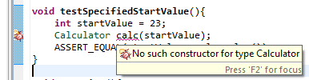
Cleary this constructor is missing, as we have no constructor defined for Calculator. The resolution for the problem accomplishes this for us.
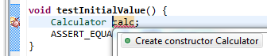
If we open the Calculator.h file, we see a new constructor defined in Calculator.
1 struct Calculator
2 {
3 Calculator(int & startValue)
4 {
5 }
6 int value() const;
7 };
Adding a Member Variable¶
The new constructor does not do much. We can add a member variable to the initializer list to store the starting value. Of course we do not need to declare it manually. We just add the initialization and receive another marker:

The following resolution creates the declaration of the member variable in the private section:
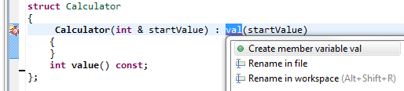
This is the result:
1 struct Calculator
2 {
3 Calculator(int & startValue) : val(startValue)
4 {
5 }
6 int value() const;
7 private:
8 int val;
9 };
If we now change value() to return the val member variable we almost have two green-bar unit tests.
Generating a Default Constructor¶
In Test.cpp we see another error marker in the first test function. Through the declaration of the new explicit constructor we have removed the implicit default constructor. Our plug-in recognizes that and suggests to create another constructor:
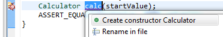
With this resolution we can add a default constructor with one click. We just need to add the initialization of val by hand.
Adding a Test Case to the Suite¶
There is also a warning marker indicating in Test.cpp at testSpecifiedStartValue. We have not yet added this new test case to our test suite. The plug-in can handle this too:
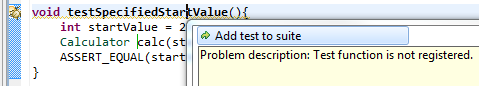
The resolution adds the test function testSpecifiedStartValue to our test suite s:
1 void runSuite(){
2 cute::suite s;
3 s.push_back(CUTE(testInitialValue));
4 s.push_back(CUTE(testSpecifiedStartValue));
5 cute::ide_listener lis;
6 cute::makeRunner(lis)(s, "The Suite");
7 }
Now compiling and running our unit tests results in a green bar for two tests.
Other Cases¶
The steps described are examples of the capabilities of our plug-in's TDD features. It can also recognize for example missing operators, local variables and free functions.
Limitations¶
As it is very complex to provide sensible code stubs for C++ just from the context where an entity is used, it takes quite some effort to achieve flawless code generation. Currently, this feature is in beta state and feedback is greatly appreciated.
Information about symbols, which is required for reporting errors and providing resolutions, heavily depends on the CDT index to be built completely.